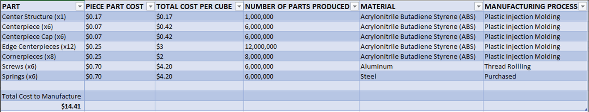
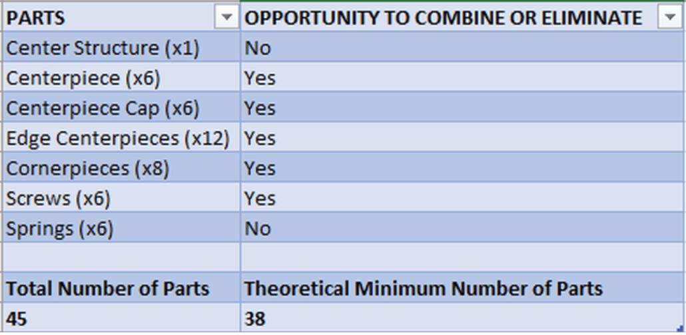

Redesign for Recylability
Detailled Engineering Drawings
DFMA Analysis
The first step in this process was to create a Bill of Materials (BOM) for this specific product. Using the cost estimation software, aPriori, as well as various other online resources, I was able to derive a rough estimate for what the price of producing one cube would be. These prices are still a bit high, but assuming overhead costs are minimized, this is a fairly accurate estimate of what the cost of one cube would be. When inputting modeled parts into aPriori, I estimated these prices as if 1,000,000 cubes were produced a year.
The next step in this process was to conduct a Design for Assembly analysis, using the Boothroyd design for assembly values. These Boothroyd values provide the rough amounts of time it takes to perform certain assembly functions. They are broken up into two categories, Handling and Alignment and Securing and Insertion.
Handling and Alignment:
Part Fetch Time: How long it takes to pick up the part for assembly; for
every 0.5 m away from you the part is, 0.5 seconds is added to assembly time.
Symmetry: Two axes are involved in this calculation, the β axis and the α axis. The
β refers to the
axis along the direction of insertion. The α axis refers to the axis normal to the β axis. Both
values
derived for β and α symmetry refer to the minimum number of degrees the part must be turned around
itsaxis in order for it to be inserted correctly. For example, a cylindrical pin has a β symmetry of
0°
as it will still be functional for insertion any way it is rotated about the β axis. Similarly, the
α
symmetry for this pin would be 180°. The time added to assembly time is the sum of β and α divided
by 360°.
Part Size: For parts smaller than 2 cm, 0.5 seconds is added to assembly time, for
parts larger than
20 cm, 0.3 seconds are added to assembly time.
Handling Difficulty: Refers to parts that are sharp, overly flexible, or have the
possibility of
getting
tangled. For each handling difficulty, 0.4 seconds are added.
Securing and Insertion:
General Placement: 0.5 seconds added if even some form of
relative placement
is required.
Hole Alignment: For aligning with small holes (diameters < 0.2 mm), 0.7 seconds are
added to assembly time. For aligning with medium holes (diameters between 0.2 mm and 0.4 mm),
0.3 seconds are added to assembly time.
Pin Alignment: Alignment of
pins smaller
than 0.2 mm adds
0.4
seconds to assembly time, alignment of pins between 2 mm and 4 mm adds 0.1 seconds to assembly
time.
Turning Insertion: If some action is needed to start a screw or
nut, 1 second is
added to
assembly time.
Insertion Difficulty: Anything ranging from the use of
two hands, to
requiring
additional force to assemble, adds 0.5 seconds to assembly time.
Rotation of
Assembly:
If the
entire assembly must be rotated during assembly, 1.8 seconds is added to total assembly time.
Below is the total assembly time it takes to assemble a Rubik's cube consisting of 6
centerpieces, 6 centerpiece caps, 12 edge centerpieces, 8 corner pieces, 6 screws, and 6
springs.
Next, I performed the second part of a Design for Manufacture Analysis which is finding
opportunities to combine/eliminate parts in the assembly. This is done by asking three questions:
1. Does a part move simultaneously with another part?
2. Can the part be made of the same material as the other part?
3. Can the manufacturing method and tolerance be the same for both this part and the other
part?
For any part, an answer of YES for all three question indicates a possibility to combine or
eliminate said part. After this analysis is done on each part, a theoretical minimum number of parts
for the assembly to still function can be found. Using this theoretical minimum, N, I can then
calculate the efficiency of the assembly of this product. Products that fall in between the 5%-10%
efficiency range demand a redesign while well designed parts have assembly efficiencies upwards of
25%. The formula to calculate assembly efficiency is
Nt/ttotal
where N is the theoretical minimum number of parts, t is the ideal assembly time which assumes there is no difficulty in handling, orientation, or assembly, usually taken as 3 seconds, and the denominator is total time taken for assembly. Because the Rubik's cube has been scrutinized and redesigned time and time again since its birth in 1974, it is close to perfect, therefore a high efficiency value is expected.
